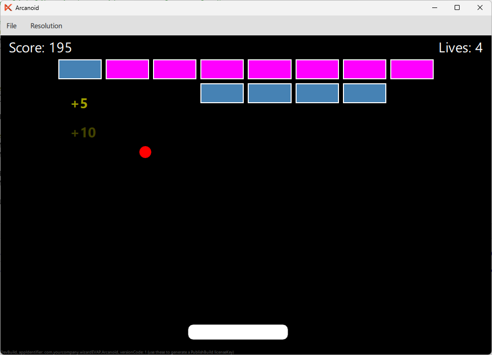

In this part of the tutorial, we will add floating score popups that appear whenever a brick is hit. The text (e.g. "+5", "+10") will drift downward and fade out, giving the player satisfying visual feedback.
Create a new file FloatingScore.qml in the qml directory. This component is a Text element that animates itself downward while fading out, then destroys itself automatically.
import QtQuick 2.0 Text { id: floatingScore property real startX: 0 property real startY: 0 x: startX y: startY color: "yellow" font.pixelSize: 14 font.bold: true opacity: 1 ParallelAnimation { id: floatAnimation running: false NumberAnimation { target: floatingScore property: "y" to: floatingScore.startY + 40 duration: 600 easing.type: Easing.OutQuad } NumberAnimation { target: floatingScore property: "opacity" to: 0 duration: 600 easing.type: Easing.InQuad } onStopped: floatingScore.destroy() } Component.onCompleted: floatAnimation.start() }
How it works:
startX and startY define where the popup appears (set at creation time).ParallelAnimation runs two animations simultaneously:Easing.OutQuad — starts fast, decelerates).Easing.InQuad — starts slow, accelerates).onStopped calls destroy() to remove the object from memory.Component.onCompleted.We need a way to dynamically create FloatingScore instances at runtime. Add a Component and a helper function inside gameArea in Main.qml:
// Floating score component Component { id: floatingScoreComponent FloatingScore {} } function spawnFloatingScore(px, py, points) { if (points <= 0) return var item = floatingScoreComponent.createObject(gameArea, { "text": "+" + points, "startX": px, "startY": py }) }
How it works:
floatingScoreComponent is a Component that wraps FloatingScore. This lets us create new instances dynamically using createObject().spawnFloatingScore() takes a position (px, py) and the points value.points is 0, nothing is spawned (no popup for zero-score hits).createObject() creates a new FloatingScore as a child of gameArea, passing the text and position as initial properties.Update the brick collision logic in the Timer to spawn a floating score after each hit. Replace the existing brick collision block with:
// Brick collisions for (let i = 0; i < bricks.count; i++) { let item = bricks.itemAt(i) if (item && item.collides(ball.x, ball.y, ball.width, ball.height)) { let points = item.hit() gameArea.score += points gameArea.spawnFloatingScore( item.x + item.width / 2 - 10, item.y, points ) ball.ballSpeedY *= -1 break } }
Key changes:
item.hit() in a local points variable.points to both the score counter and spawnFloatingScore().